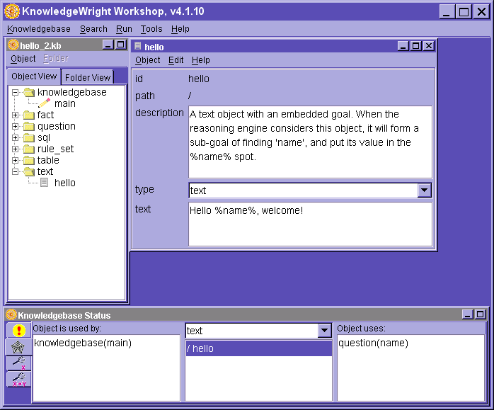
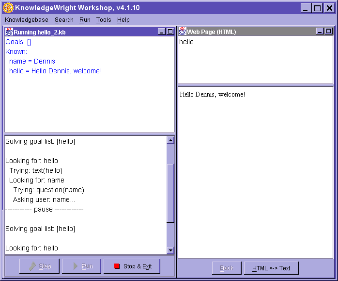

Dynamic Text
The second "hello" application
samples/basic/tutorial/hello_2
Now it's time to make hello smarter with
a text object. Text objects have textual values that can have embedded goals
in them. So, instead of a simple-valued fact for hello, this time we'll use
a text object that has the embedded goal of putting your name in the message.
Set the goal hello & create the text object 'hello'
- Create a new knowledgebase called hello_2.
- Edit the knowledgebase object, main, to set the goal to
hello, as in the hello_1 sample.
- Create a new text object, called hello, using the Object/New
menu.
- In the field labeled text, enter "Hello %name%, welcome!", only
this time without the "s. You don't need to enter the "s in fields
that are known to only contain textual values, as opposed to numbers.

The %name% is the embedded goal. It means, don't actually provide a value for
this text object until we've satisfied the goal name, and put that value
in the text string.
Create the question 'name'
How do we find a value for the goal name? Well,
let's ask the user. To do that we create a question object.
- Create a new question object and name it name.
- Pick the type, fill_in_the_blank. Notice the fields change.
- Select an answer type of text, and a length of a good length.
- Fill in the prompt field with: "What is your name?", without
the "s.
- Save & close the question object.
- Save the knowledgebase.
Run it
- Select run/run
- Notice that you are immediately asked your name. Enter it.

We can look at more detail of the four panels presented here.
Upper Left - The current state of the system, including the unsolved goals
(probably none, represented as [], at the end), and what is known.
Lower Left - A trace of the reasoning process. Note the interruption as the
user is asked a question.
Upper Right - The goal.
Lower Right - The output values of the goal.
Copyright ©1996-2002 Amzi! inc. All Rights Reserved. Amzi!,
KnowledgeWright and WebLS are registered trademarks and Subscription Plus and
Logic Server are trademarks of Amzi! inc.